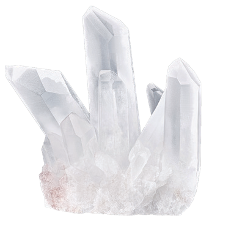
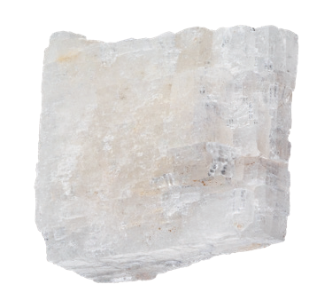

광물 A로 B를 긁은 뒤 가루를 털었다. B에는 흠집이 남고 A에는 흠집이 없었다. 이 관찰로 비교할 수 있는 성질과 관계는?
가루를 턴 뒤 B에 흠집이 남았으므로 A가 B보다 더 단단합니다. 이 결과만으로 광물 가루의 색을 판단할 수는 없습니다.
준비된 암석 6종의 색·알갱이·무늬와 묽은 염산 반응을 비교해 이름과 종류를 골라 보세요.
확대한 사진은 손가락이나 방향키로 옮겨 볼 수 있습니다. 표본마다 사진의 크기는 다릅니다.
염산 반응을 아직 관찰하지 않았습니다.
도구를 하나씩 사용하여 표본의 성질을 비교하세요. 석영과 방해석은 서로 긁어 굳기를 비교할 수 있습니다.
관찰할 도구를 고르세요.

석영
방해석같은 계열의 색을 띠는 두 암석에서 결정의 크기를 비교하세요.
빠르게 식은 암석은 대체로 결정이 작고, 천천히 식은 암석은 결정이 큽니다. 색은 구성 광물의 종류와 관련됩니다.
실물에서 묽은 염산을 사용할 때는 보안경·장갑을 착용하고 선생님의 안내를 따르세요.
가루를 턴 뒤 B에 흠집이 남았으므로 A가 B보다 더 단단합니다. 이 결과만으로 광물 가루의 색을 판단할 수는 없습니다.
두 광물의 겉색은 검은색으로 같지만 가루의 색과 클립 반응은 서로 다릅니다. 겉색만으로 같은 광물이라고 판단할 수 없습니다.
어두운색의 작은 결정은 대표적으로 현무암, 어두운색의 큰 결정은 반려암에 해당합니다. 결정 크기로 냉각 조건을, 색으로 구성 광물의 차이를 살핍니다.
대리암은 석회암이 변성되어, 편마암은 기존 암석이 변성되어 만들어집니다. 줄무늬가 있는 암석을 모두 퇴적암으로 분류하거나 밝은 암석을 모두 화성암으로 분류하지 않습니다.